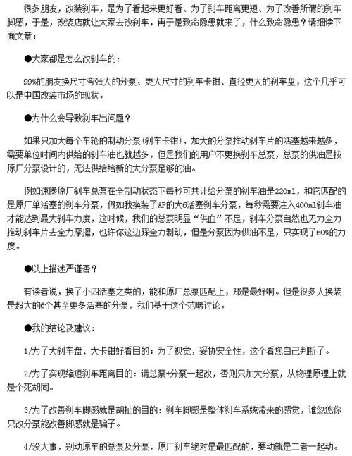

我们为什么改刹车？制动系统的正确改装
1民用车的先天不足
前言：改装在国内越来越火爆，而正确的改装方式不仅仅是技术问题，也是安全问题，文章中引用了其他媒体对于制动系统改装的评论，并且对此发表了自己的意见，而对于制动系统的正确改装，我们也希望大家能够发表自己的看法。
以下是转载原文：

首先声明，以上贴图内的这篇文章转载自内地某门户网站，很多朋友看过这篇文章后纷纷咨询我对错与否，今日开篇专门谈一下刹车的问题。
先说一句，这篇文章的观点基本都是错误的。
一、什么是好刹车？
最佳的制动状态只有一种：制动力=轮胎摩擦极限。
在这种完美的状态下，即便原车装有ABS系统，一脚刹到底时，ABS根本不会启动，轮胎始终保持在抱死与非抱死的临界点边缘，始终保持在轮胎摩擦力极限的边缘状态下完成整个制动过程。
如此，乃最完美最顶级的刹车效果。
汽车乃是一个复杂的系统，而刹车是重中之重
在现实状态下，制动力取决于以下几点：驾驶者施加在制动踏板上的人力，制动踏板自身的杠杆作用，踏板推动制动总泵可以产生的推力，制动真空辅助泵可以产生的辅助力，刹车油路自身的力传递特性，卡钳自身的力传递特性，刹车片与刹车盘的摩擦特性。
而轮胎的摩擦力极限，主要取决于轮胎自身的摩擦特性和路面的摩擦特性。
二、原厂刹车的弱点
原厂刹车最大的弱点是，制动力从初始状态至极限发生之间的过度极短，用通常描述动力的语言来说，叫做“非常不线性”。俗语形容，踩轻了刹车不够力，踩重了刹车又太过。
大部分原厂刹车，你使出吃奶的力气一脚把刹车踏板压到底之后，刹车系统自身所产生的制动力，往往远远超过轮胎的摩擦极限，因此，原厂刹车轻易便可以让ABS系统介入工作：一脚刹车到底，总是会听到ABS总泵“咯咯咯咯”各种响声，刹车踏板不断反馈回弹的力度，ABS系统不断对各轮胎的制动卡钳进行“刹-放-刹-放”的反复动作。
如何踩刹车其实是一门学问
所有厂家，都会宣称ABS系统会帮助你在重刹的同时车头还可以保持良好的操作反应，所以他们都会鼓励你去尝试紧急的刹车变线来鼓吹ABS系统到底有多棒。
事实是，如果你的刹车系统，可以做到本文第一点形容的完美状态，即便没有ABS，你也可以在紧急的极限制动状态下同时轻松完成车头的转向和变线动作，并且，刹车距离，会缩短很多！但，问题在于：做一套ABS系统，远比做一套完美的刹车省钱省力很多。而且，对于大部分驾驶者来说，操作ABS远比去锻炼自己好的刹车脚感容易很多。同时，介于ABS系统之上，可以完成很多电脑控制的车身稳定动作，比如ESP，VDC等等等等电子稳定功能。这些功能，对于驾驶技巧足够好的车手来说，完全是垃圾。可对于普通行街的车主来说，则是可以卖大马力街车给他们，还让他们能够安全走街的毒药。
2如何做一套完美刹车
三、刹车改装的目的
优秀刹车改装的目的其实只有一个：让车手轻松地，连续地维持最完美的刹车状态。
一套优秀的改装刹车系统（包括刹车卡钳，刹车片，刹车盘，刹车钢喉，刹车油····），也许在极限制动力的输出上，并不能超越原厂的刹车卡钳。
但是，改装刹车往往可以让车手以较为轻松的脚感连续踩出最完美的刹车状态。
同样一部车做100km/h-0的减速试验，原厂刹车，一脚重刹之后，ABS马上系统，你听到ABS总泵一阵“咯咯咯咯”地响声，花了40米的距离完成了一次减速。然后，你不断重复这个过程，5次以后，你会发现你的制动距离已经变成了45米甚至50米。
搭配合适的改装刹车，一脚重刹之后，ABS系统保持沉默，完全不启动工作，轮胎并没有抱死，但你却可以清晰地听到轮胎在抱死与非抱死极限边缘状态下的响胎声，以及脚下清晰明了的制动感，你花了38米完成了一次减速，然后，你不断重复这个过程，5次甚至10次以后，你会发现你的制动距离依然是38米。
ALCON B-TYPE两片式竞技卡钳
四、改装刹车的特点
优秀的改装刹车搭配，往往可以为主制动泵“减压”，所以，你根本不需要更换制动主泵去配合你改装的刹车套件。如果有人告诉你需要更换更大的制动总泵来搭配他为你配置的刹车套件，只能说明他给你的搭配完全错误，纯属坑爹。
优秀的改装刹车搭配，同时也为车手“减压”，踩出一次完美的刹车状态，你需要施加在刹车踏板上的人力，应该远远小于你踩原厂刹车至极限的力量。一套优秀的刹车，并不需要你在极限暴走时每次都玩命一样去踩它，而应该只是凭借自身本能的反应，就可轻松控制刹车系统线性的输出，踩轻，有轻踩的反应，踩中，有中度的适量效果，重踩，有完美的刹车状态。好的刹车改装，往往可以实现刹车踏板的行程与力度有着与油门踏板加速时一致线性表现，而这，也是原厂单面单活塞大卡钳与改装使用的轻量化多活塞卡钳的本质区别！
这款与普通市面常见跑车和改装车装备的BREMBO Performance卡钳有本质区别，这是BREMBO Racing系列的卡钳，单体锻造钛合金活塞，反应一流
五、竞技多活塞卡钳与街道版多活塞卡钳的区别
高级别赛车往往省略ABS系统，也没有刹车真空助力泵，对于制动卡钳的控制全靠车手的脚力和脚感。因此，越高级别赛车的制动卡钳往往越容易越轻松被推至极限。卡钳本身会采用单体铝合金锻造，内部油路的设计也有相当的加力效果，而卡钳活塞则为钛合金材质，追求轻量化下的灵敏反应。因此，车手在没有真空助力泵的情况下，都不需要每次都卯足注意力和浑身力气去跟刹车踏板玩命死磕，也可以在赛道上狂奔几个小时而次次轻松做出完美的制动状态。
街道版多活塞改装用卡钳的制作则廉价许多，材料和工艺远逊于竞技版，皆因街车自身配有真空助力泵，且街车轮胎的摩擦力远逊于赛车轮胎，所以大胆偷工减料许多也可以让街车车手在马路上找到优于原厂刹车的制动性能和脚感。
同样四活塞卡钳街版与赛版卡钳的对比，左边为AP 5200街版卡钳，右边为ALCON XF四活塞竞技卡钳。体积，用料都有巨大的区别，详细分解，我们下次再谈
识得一位旧友，多年前大胆将国际高级别耐力赛车使用的竞技卡钳改装于自己和客人所驾的街车之上。卡钳多为AP，BREMBO RACING，ALCON的单体锻造钛合金四活塞卡钳，单只卡钳的价格大都在2400USD以上，盘通常为330mm直径左右的锻钢竞技用刹车盘，单只新盘大都450USD以上，刹车片多为0-800度的车手训练用片，全套制动钢喉，MOTUL RPF600制动液。多年前见他将这般超重火力奢侈到变态的制动系统装于街车之上，苦思多日始终怀疑其在街道的制动表现。终耐不住心头疑惑奔赴千里之外实地拜访，亲自测试。
走街，刹车踏板脚感很轻，极为线性，制动力随踩随有，操作极为轻松简便。上到高速，200km/h以上的时速一脚重刹下来，维持住自己施加在踏板上合适的脚力，ABS系统并不启动，只觉得自己可以轻松找到轮胎摩擦力的极限边缘，眼看着两只前轮在制动时青烟四起却并没抱死，呔盘手感极佳，依旧有很棒的转向能力，而那股200km/h-80km/h产生的极为蛮横的减速力道，远比通常市面所见成套不过一万五六RMB的刹车在100km/h-0的减速还要过瘾。
那位友人笑言，这样的刹车，对于你我这般瘦弱的车手来说，脚感力度刚好。若然遇到身强体健，腿力更强的客人，大都会想把刹车总泵再改小一些呢。